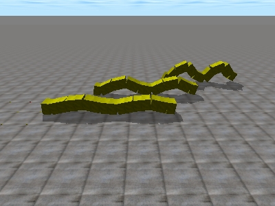

Continuo haciendo vídeos de las simulaciones de mis robots modulares. En esta se puede ver cómo varía la locomoción de Cube Revolutions según los valores de los parámetros:

Y en esta los diferentes modos de caminar del robot Hypercube.

Todos los movimientos están realizados simplemente haciendo oscilar los módulos sinusoidalmente.